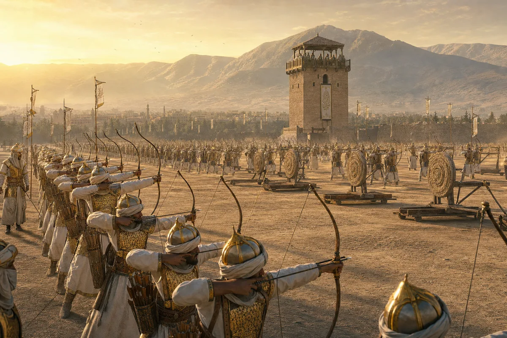
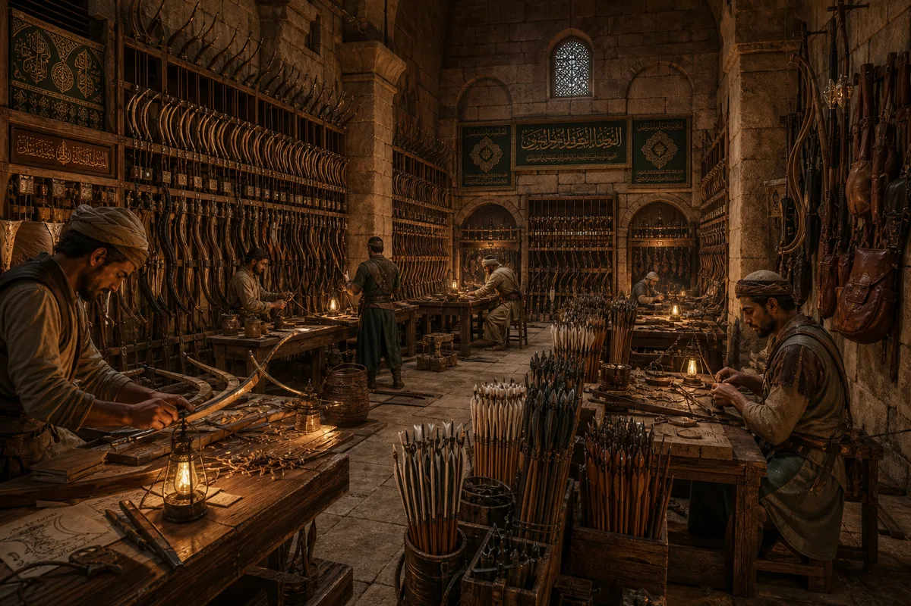
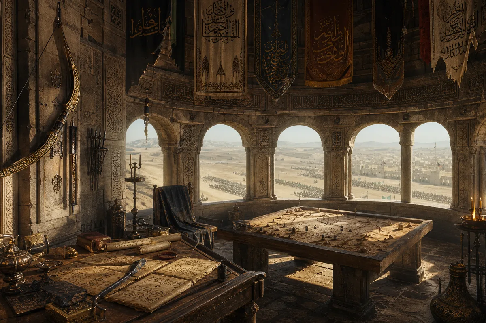
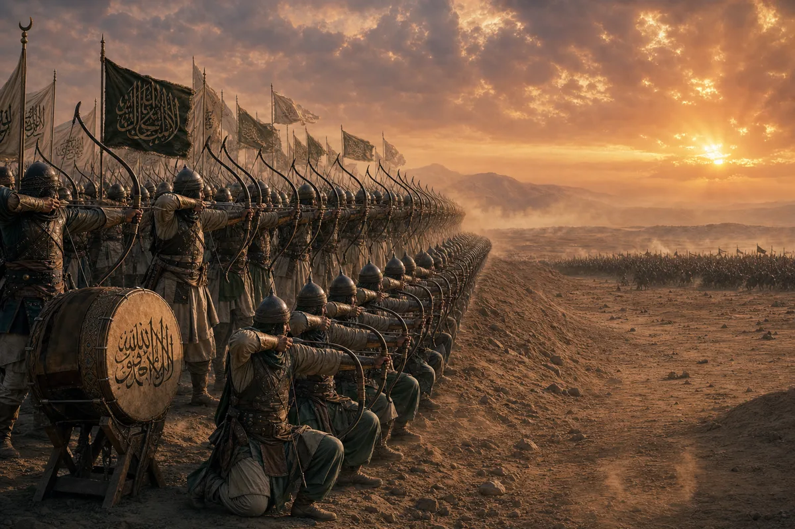
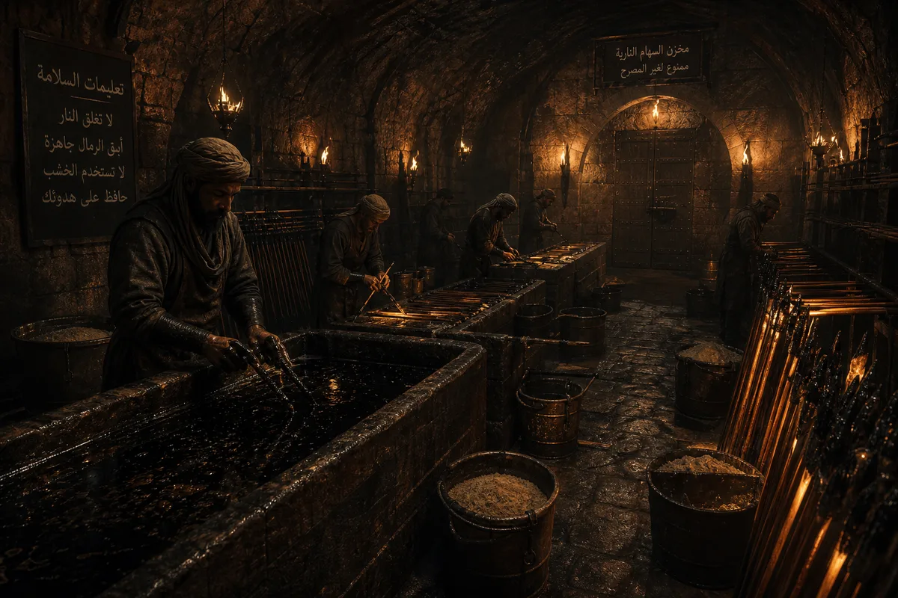
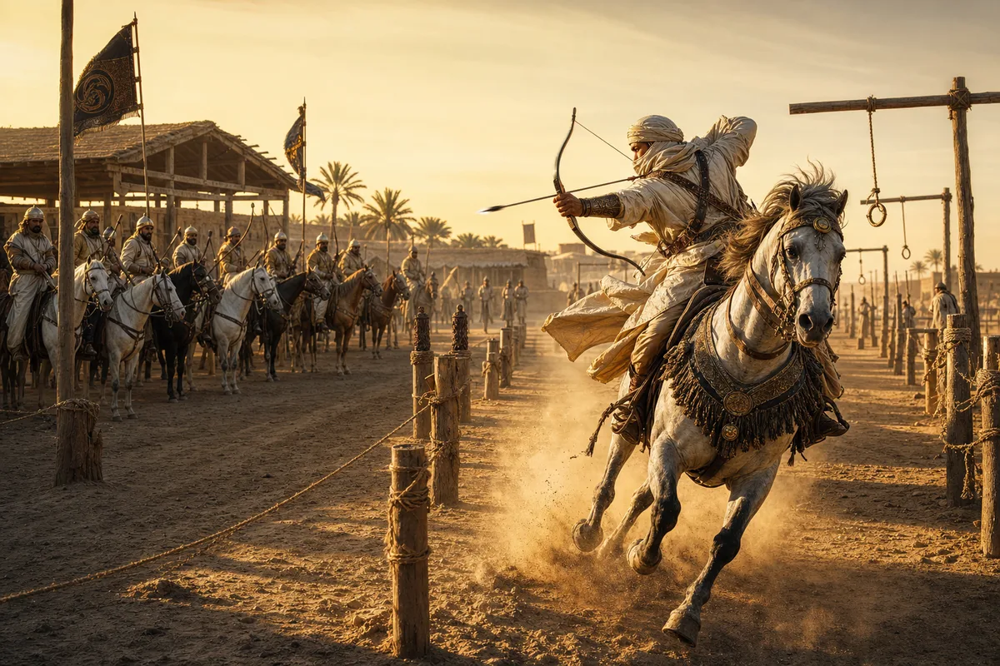

District I — The Killing Field
THE TRAINING GROUND
"An arrow does not care about your opinion. It goes where your body told it to go. Your mind was not consulted. Train the body. The mind will follow or the mind will be silent. Either is acceptable."
Capacity: 800 archers drilling simultaneously · Ranges: 50m (recruit), 150m (regular), 300m (elite), 450m (impossible — 3 men can hit it) · Schedule: Dawn to dusk, six days · Rest day: Friday — prayer and maintenance · Dropout rate: 60% in first month · Graduation: 10 arrows, 10 hits, under 30 seconds, at 200m
🏹 · 🏹 · 🏹

District II — The Bowyer's Domain
THE ARSENAL
"A bow is not a weapon. It is four animals and a tree who agreed to become one thing. Horn for compression. Sinew for tension. Wood for memory. Hide glue to hold the argument together. The tree is the spine. You are merely the hand."
Inventory: 4,200 composite bows · Arrow production: 2,000/day · Types: Broadhead (flesh), Bodkin (armor), Incendiary (siege), Whistling (signal), Crescent (rope-cutting) · Master bowyers: 14 (7 Arab, 4 Persian, 2 Turkish, 1 who will not say) · Build time per bow: 2 years (curing alone is 18 months)
🏹 · 🏹 · 🏹

District III — The Eagle's Perch
THE COMMANDER'S TOWER
"The commander does not shoot. The commander decides who does not come home. Every arrow he orders released is a letter of condolence he has already written in his head. The bow on his wall has not been drawn in seven years. It is still strung. He wants it to know he has not forgotten."
Commander: Qais ibn Sa'd — 34 years, 22 campaigns, 0 defeats, 1 eye (the other he calls "the price of looking too closely") · Staff: 4 range officers, 2 scouts, 1 calligrapher (battle reports are literature) · The bow on the wall: 120lb draw weight — only 3 men alive can pull it — Qais is one
🏹 · 🏹 · 🏹

District IV — The Three Ranks
THE BATTLE FORMATION
"First rank kneels. Second rank stands. Third rank is elevated. When the drum beats once, the first rank fires. When it beats twice, the second. Three beats, the third. Then the first rank has reloaded. There is no pause. There is no silence. There is only rain. The enemy does not fight men. The enemy fights weather."
Standard formation: 3 ranks × 200 archers = 600 bows · Volley rate: 1,800 arrows in 10 seconds · Effective range: 250m (massed volley) · Maximum range: 450m (harassing fire) · Signal system: Drum (fire), Horn (advance), Flag (cease) · The math: At full volley, the sky darkens. This is not poetry. This is geometry.
🏹 · 🏹 · 🏹

District V — The Burning Room
THE FIRE ARROW CHAMBER
"Fire arrows are not for killing. Swords kill. Spears kill. Fire arrows are for the moment before. The moment when the enemy looks up and sees the sky is on fire and understands — with perfect clarity — that they are standing in the wrong place."
Composition: Naphtha-soaked linen + pitch + beeswax seal · Burn time: 45 seconds per arrow · Effective siege range: 200m · Storage: Underground, stone-lined, sand floor — no wood permitted · Safety record: Two incidents in 40 years (both survived, one promoted, one retired to farming with no regrets) · Preparation crew: 6 specialists — all missing eyebrows
🏹 · 🏹 · 🏹

District VI — The Parthian Shot
THE MOUNTED COURSE
"The horse does not aim. The rider does not steer. For three seconds between the gallop's beats, horse and rider are one animal with four legs and two arms and no fear. In those three seconds, the arrow flies. If you are thinking, you are too late. If you are aiming, you have already missed. The Parthian shot is not archery. It is trust."
Course length: 400m with 12 obstacles · Targets: 6 (2 static, 2 moving, 2 behind the rider) · Qualifying time: Under 40 seconds, 4 of 6 hits · Horses: Arabian — bred for the course from birth · The backwards shot: Full twist in the saddle at gallop, firing behind — the move that broke Rome · Current record: 6 of 6, 31 seconds — held by a 17-year-old who will not give his name